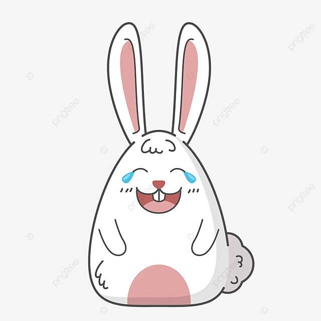
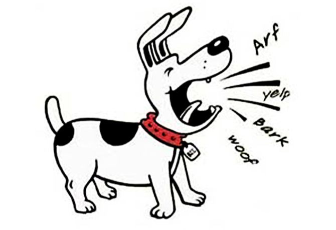

Erase una vez un perro cazador que tuvo descendencia. Un buen día, uno de sus cachorros pensó que era el momento de empezar a valerse por sí mismo y decidió salir solo de cacería. Tras olisquear durante bastante rato sin mucho éxito empezó a encontrarse cansado y decidió buscar un lugar para refugiarse. Tras merodear unos instantes, encontró la madriguera de una liebre y empezó a ladrar ante ella.

La liebre , algo temerosa y desconcertada por el extraño ruido que hacía los ladridos del cachorro, se asomó a ver qué ocurría y cuando lo vio desde lejos le dijo: “¿Qué es ese ruido? Si ni siquiera sabes ladrar. Eres un cachorro. Debería darte pena ladrar así”.

El pequeño perro se acercó un poco más y volvió a intentar ladrar para ganarse el respeto y la liebre se rió a carcajadas de él.
Tras unos minutos, el cachorro se aproximó un poco más a la liebre y puso más énfasis y energía en su ladrido . La liebre lo observaba y seguía haciéndole gracia los intentos del pequeño por hacerse respetar. En un incontrolable ataque de risa, la liebre cayó de espaldas al suelo y el cachorro se abalanzó sobre ella y le dio un bocado. Pese al susto, la liebre herida salió corriendo y aún desde la lejanía, seguía diciendole al cachorro que tampoco mordía como un verdadero cazador.
